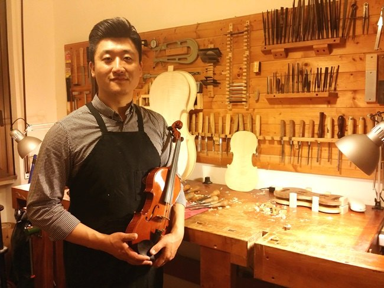

Photograph courtesy of the maker
Jihwan Park
Born in Daejeon, Korea, in 1982, Jihwan Park entered the International Stradivari Violin Making School of Cremona in 2005 and studied for five years under Massimo Negroni. After his diploma he worked with Sung Hyun Park and Michele Dobner, building a foundation in both making and repair. His competition record includes a Gold Medal, Silver Medal and Best Workmanship at the 13th Wieniawski competition in 2016, a Silver Medal for viola at Mittenwald in 2018, and a Silver Medal for cello with the Balzarini and Cè prizes for workmanship and varnish at the 15th Cremona Triennale in 2018. He opened his own workshop in Cremona in 2015. In 2025 he served on the jury of the 15th Henryk Wieniawski International Violin Making Competition in Poznań, alongside Frank Ravatin, Krzysztof Krupa and Antoine Nedelec, the first Korean maker to be invited. His instruments are played by professionals, students and amateurs in Europe, Asia and the United States.
Work